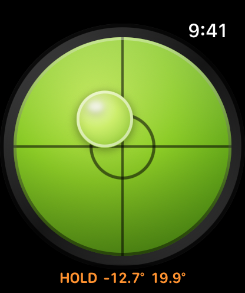

Bubble Level Watch Special
A spirit level on your wrist. Hold the watch against a surface and the bubble floats toward the high side, with the tilt of each axis shown in degrees. It taps you at level, and a tap on the screen freezes the reading for spots you cannot see.
Requires watchOS 10 or later.
Download


Support
Have a question, found a bug, or need help with the app? Reach out. We read every message.
Before you write
A few quick things to try first:
- Says "No motion sensor"? The app needs the watch's motion sensors. This message appears in the watch simulator, which has none. On a physical Apple Watch it should never appear; if it does, restart the watch and reopen the app.
- Bubble not moving? Check whether HOLD is showing in the readout. The reading is frozen while it is. Tap the screen once to resume.
- No taps when it reaches level? Check Watch Settings → Sounds & Haptics and make sure haptics are enabled and the strength is not at minimum.
- Readings look jumpy? Rest the watch flat on the surface instead of holding it in the air. Your hand always moves a little, and the bubble follows it.
Frequently Asked Questions
- Does it work without my iPhone?
Yes. It is a standalone watch app. There is no iPhone app and no pairing step. - How accurate is it?
An Apple Watch measures tilt with its motion sensors, not with a machined vial. Treat it as a quick everyday check rather than a replacement for a calibrated precision level. - What counts as level?
Within about 2.9° of flat. That is when the centre ring lights up and the watch taps you. - Does it work when my wrist is down?
Yes. The display stays readable in Always-On, dimmed slightly and updating at a slower rate to save power. - Why two taps instead of one?
So the level cue cannot be confused with the single tap you feel when freezing or resuming a reading. It is also firm enough to feel through a sleeve. - Does it need an internet connection?
No. The app has no network access at all. - Does it collect any data?
No. Motion values are used to draw the bubble and never leave your watch.
Manual


Reading the level
The bubble floats toward the high side of the surface, the same way liquid does in a real spirit level. Lower that side, or raise the opposite one, until the bubble sits in the centre ring.
The two numbers under the dial are the tilt of each axis in degrees: the first is side to side, the second is front to back. When both are near zero the surface is level.
The level tap
The moment the surface settles into level, the watch plays two firm taps in quick succession. This is the part that lets you hold an awkward angle and keep your eyes on the work rather than on your wrist.
Holding a reading
Tap anywhere on the screen to freeze the measurement. HOLD appears next to the numbers and they turn orange. Tap again to resume live readings.
This is for surfaces you cannot see while measuring. Press the watch against the underside of a shelf or behind a cabinet, tap to freeze, then bring your wrist back and read what it captured.
The first time you open the app the readout shows Tap to lock for a few seconds, since this gesture is the one part of the app with nothing on screen to suggest it. It stops appearing once you have used it.
Face down
Roll the watch past vertical so the screen faces the ground and the readout changes to Watch facing down. The dial drains of colour and the bubble parks against the rim, the way the bubble in a real vial sits against the base when you turn it over.
This is deliberate. With the screen pointing down, almost none of gravity acts across the face of the watch, and a naive reading would come out as a perfect zero. The app will not call that level, and it will not freeze a reading in this state either — tapping gives a short error buzz instead of a measurement.
Wrist down
When your wrist drops, the watch enters Always-On and the app dims slightly and updates less often to save power. The bubble keeps moving and the reading stays legible, so a glance is enough.
Legal
Privacy Policy
Last Updated: August 2026
Information We Do Not Collect
Bubble Level Watch Special does not collect any data. We do not collect, store, use, share, sell, or transfer any personal information.
Motion Sensors
The app reads the Apple Watch motion sensors to work out how far the watch is tilted, and uses those readings only to draw the bubble on screen. The values stay on your watch. They are not stored, not shared, and not sent anywhere.
No Network Access
The app has no network access, no user accounts, no analytics, no advertising, and no third-party code.
Children's Privacy
Since we do not collect any data, we comply with all relevant regulations related to children's privacy, such as the Children's Online Privacy Protection Act (COPPA).
Changes to This Policy
We may update this Privacy Policy from time to time. Changes are effective when posted on this page.
Contact Us
If you have any questions about this Privacy Policy, contact us at: support [at] hoshinosoftware [dot] com